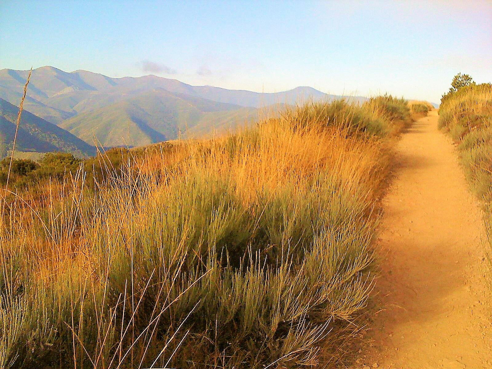

My Journey to the End of the World
On a particulary cold and dreary New England afternoon in the winter of 2012, I snuggled up with my warmest blanket and flipped through some channels. I settled on an interesting looking film starring Martin Sheen and Emilio Estevez, called, The Way. The movie stars Sheen as a grieving father who has traveled to France to collect the cremains of his recently deceased son, played by Estevez. His adult, free-spirited son had spent his life traveling the world, much to his father's dismay. Sheen's character wants his son to choose a more polished, secure path as a working professional; in essence, his son Daniel's life is a source of embarrassment and disappointment. What made this movie so poignant for me was how losing his son brings him closer to fully understanding, and ultimately appreciating, the beauty of who his son had been.
You don't choose a life, dad. You live one.
Once Sheen's character, Tom, arrives in Spain, he is moved by his loss to honor his son's memory by finishing the trek his son had died trying to complete. The Rotten Tomatoes website sums it up quite nicely:
The Way is a powerful and inspirational story about family, friends, and the challenges we face while navigating this ever changing and complicated world. Martin Sheen plays Tom, an irascible American doctor who comes to St. Jean Pied de Port, France to collect the remains of his adult son (played by Emilio Estevez), killed in the Pyrenees in a storm while walking The Camino de Santiago, also known as The Way of Saint James. Rather than return home, Tom decides embark on the historical pilgrimage to honor his son's desire to finish the journey. What Tom doesn't plan on, is the profound impact the journey will have on him and his "California Bubble Life". Inexperienced as a trekker, Tom soon discovers that he will not be alone on this journey.
The epiphany
As soon as the movie ended, I knew I wanted to make the pilgrimage to Santiago de Compestela too. I started doing a ton of research and it wasn't long before I had collected a nice list of websites to help me plan my trip (I've also included some more recent ones):
If you are interested in walking the camino, or The Way, then I highly recommend you plan before you go. Referencing the above sites is an excellent place to start. You will also want to do some physical preparation, which some of these sites (and many available via online search) can explain in greater detail.
My Camino
After intense preparation, I headed to Spain 8 months after first watching The Way! I flew to Madrid, found my way to the right bus, and somehow managed to make it to my starting point without getting lost. I began my camino in Astorga, and ultimately walked 217 miles to Fisterre, which the early Romans believed to be the end of the world. I actually walked along the remarkably well-preserved remains of ancient Roman roads, through the clouds, and deftly avoided cowpies along the way. It was an amazing adventure and I cannot wait to do it again.
